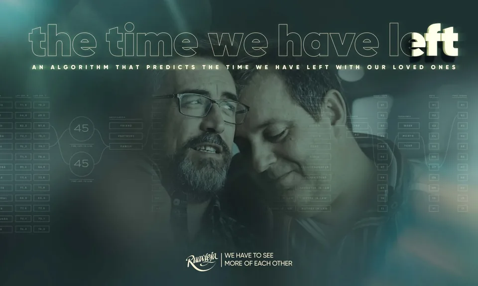

International Student Enrolment: Top 5 Countries (2023–2024)
Pop Culture Parallels
Remember to Live
For centuries, art and storytelling have reminded us that life is short. Now, interactive digital media uncovers human connections through vibrant visual languages and real-time analytics.
Every 1 is someone.
For people willing to reflect on their life in relation to others, lifelong learning is fundamental.
Big numbers tell relatable stories.
Learning how to analyze demographic data provides a powerful lens to expand your point of view.
Awareness leads to understanding.
Infrastructure, institutions, supply chains, and public spaces are interconnected in complex ways. Increased awareness fosters empathy, enriching the human connections that give our daily lives deeper meaning.
2013 One jellybean a day
BuzzFeed Video, Ze Frank
“The Time You Have (In JellyBeans)” was first posted by BuzzFeed Video in June 2013, with Ze Frank credited as the Lead Producer. The video counts out one jellybean for each day an average person will live, based on data from the U.S. Bureau of Labor Statistics. With nearly 9 million views, this viral classic continues to inspire reflection by vividly representing time in a tangible way: one jellybean for each day.

Click to open the campaign ↗2018 Time together
Leo Burnett Madrid for Ruavieja · D&AD Awards Archive
Five years later, Leo Burnett Madrid launched “The Time We Have Left” for the Spanish heritage brand Ruavieja. The Christmastime campaign encouraged quality time with loved ones by using life expectancy data to predict how many days and hours they had left together. It earned international acclaim and major awards, including D&AD recognition for excellence in commercial creativity.
1 Two ways of knowing
“Drive innovation by deeply understanding customer needs.”
Source: IDEO U (2026)
“Relationships are vital to creating awareness, building trust, and garnering support in order to mobilize action.”
Source: Cote-Meek, Colonized Classrooms (2020), p. xviii.
Cited in Patricia Barkaskas and Derek Gladwin, “Pedagogical Talking Circles: Decolonizing Education through Relational Indigenous Frameworks,” University of British Columbia.
2 Comparative History: Memento mori · Memento vivere
- Johann Wolfgang von Goethe, “An Christian Gottfried Daniel Nees von Esenbeck,” November 12, 1824, in Goethes Werke: Herausgegeben im Auftrage der Grossherzogin Sophie von Sachsen, IV. Abteilung, Goethes Briefe, vol. 39, November 1824–Juli 1825, ed. Carl Schüddekopf (Weimar: Hermann Böhlaus Nachfolger, 1907), 11–12.
- Johann Wolfgang von Goethe, “Schwebender Genius über der Erdkugel—Mit der einen Hand nach unten, mit der andern nach oben deutend,” in Gedichte, ed. Erich Trunz (Munich: C. H. Beck, 2007), 368.
- Pierre Hadot, N’oublie pas de vivre: Goethe et la tradition des exercices spirituels (Paris: Albin Michel, 2008), 11; Baruch Spinoza, Ethics, pt. 4, prop. 67, in Spinoza: Complete Works, trans. Samuel Shirley, ed. Michael L. Morgan (Indianapolis: Hackett Publishing Company, 2002).
- John Kenyon, “Memento Vivere,” in A Day at Tivoli: With Other Verses (London: Longman, Brown, Green, and Longmans, 1849), 170.
- Oxford English Dictionary, s.v. “memento vivere, n.,” accessed July 15, 2026.
The Canadian Innovation Dimension (CID) connects researchers, entrepreneurs, and global citizens across industries and borders.
CID’s Innovation Watchlist brings together data from public sources, helping you explore shifting sectors, policy trends, and market forces shaping what comes next.